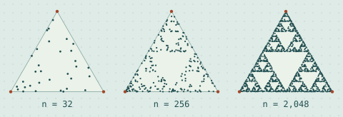

Chaos Lab.
What takes shape when you let chance draw?

Dartboard
Scatter points across a square and see how many land inside its circle.
What takes shape when you let chance draw?

Scatter points across a square and see how many land inside its circle.